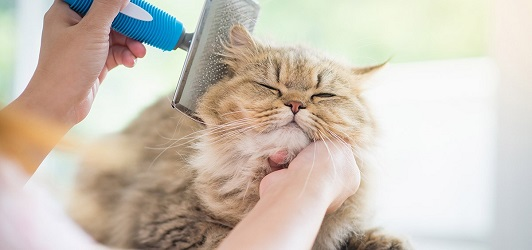

Nosotros

Somos un grupo de personas que amamos a los gatos y intentamos cuidado de ellos, trabajamos arduamente para mejorar la calidad de vida de los gatos y educar a la comunidad sobre su cuidado. Creemos que todos los gatos merecen amor, atención y cuidados adecuados. Nuestro equipo de voluntarios comprometidos y amantes de los gatos trabajan incansablemente para proporcionar a nuestros gatos rescatados los cuidados necesarios, desde la atención médica hasta el amor y el cariño que merecen. Si compartes nuestra pasión por los gatos y quieres contribuir a hacer del mundo un lugar mejor para ellos, ¡únete a nosotros! Con tu ayuda, podemos lograr un cambio significativo para ellos en nuestra comunidad.